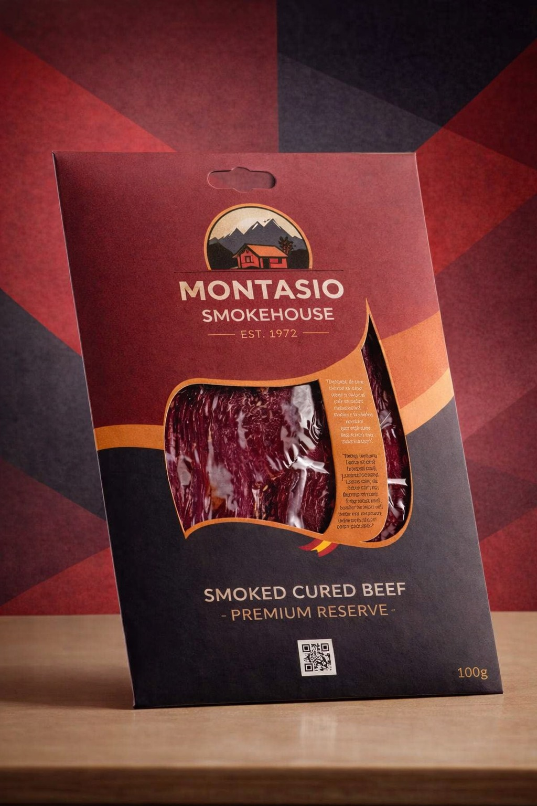

Baskısız Ambalajlarda Marka Katmanı
Et ve süt ürünlerinde kullanılan skinpack ve shrink torba sistemleri ürün koruma ve raf ömrü açısından yüksek performans sağlar; ancak bu yapılar çoğu zaman baskısızdır veya marka iletişimi için yeterli yüzey sunmaz.
Karton bir marka katmanı ile, ürünü koruyan teknik ambalaja rafta ayrışmayı sağlayan görünürlük katmanını ekleyin.